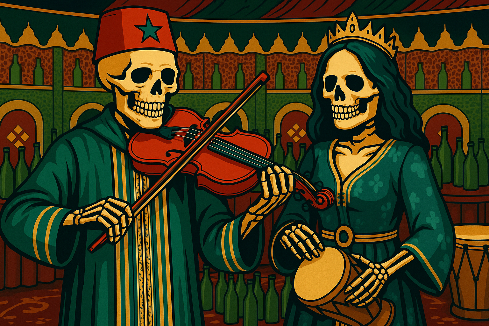
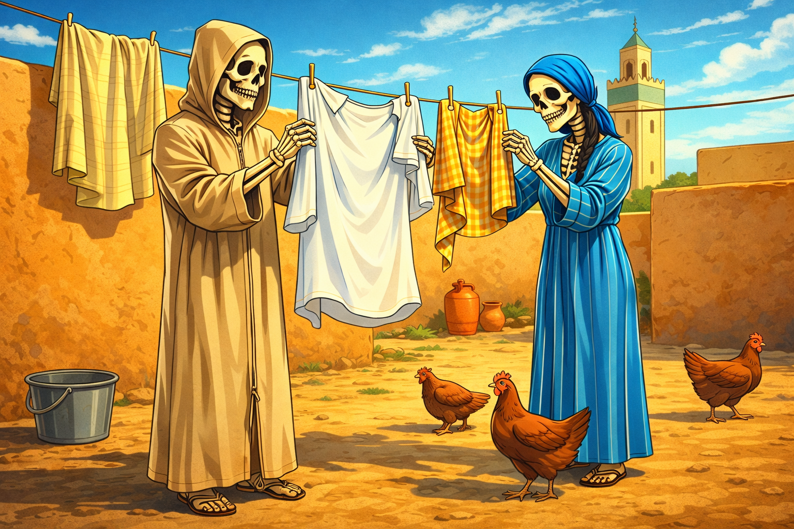
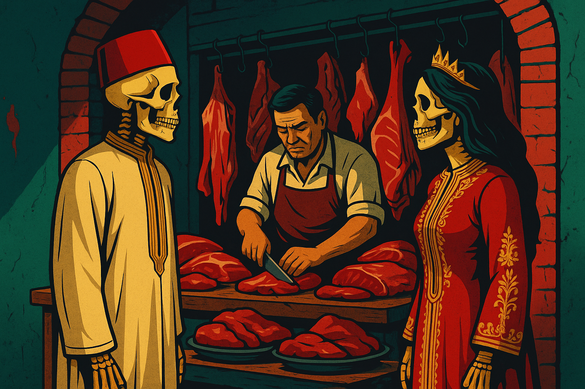
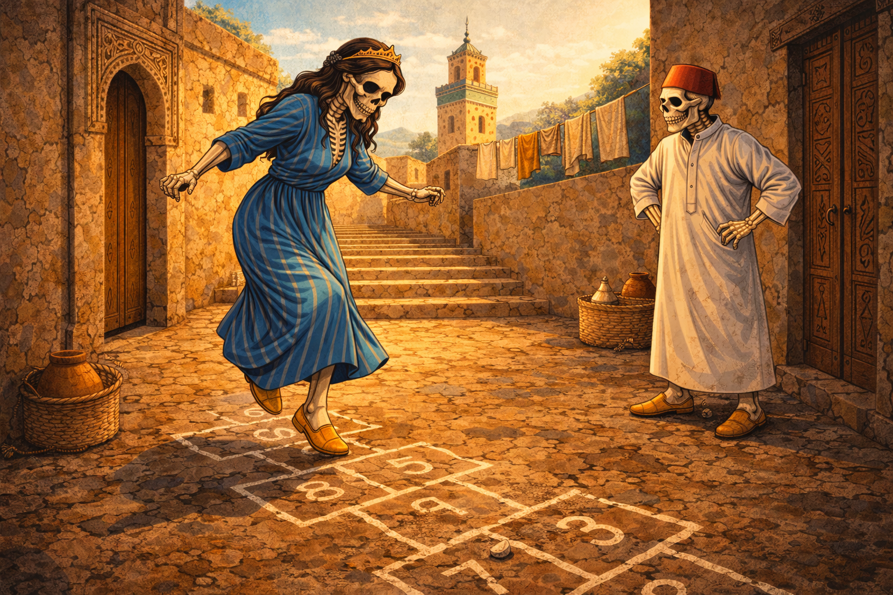
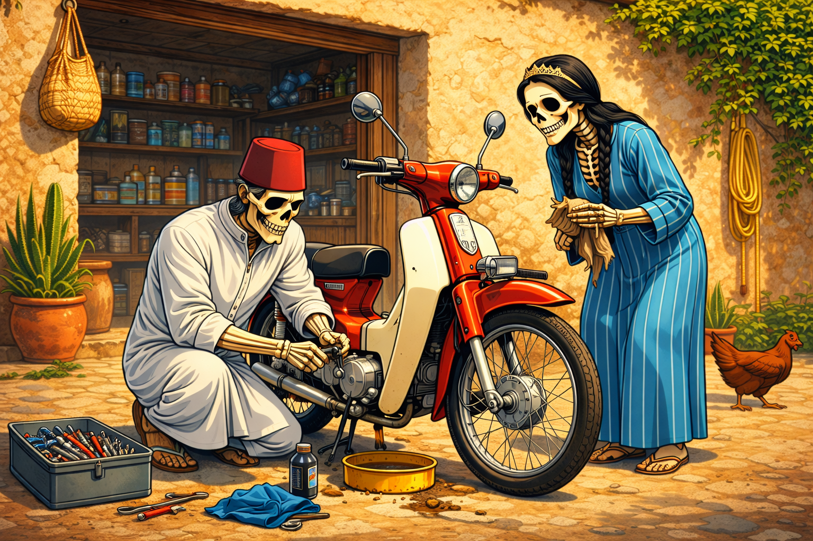
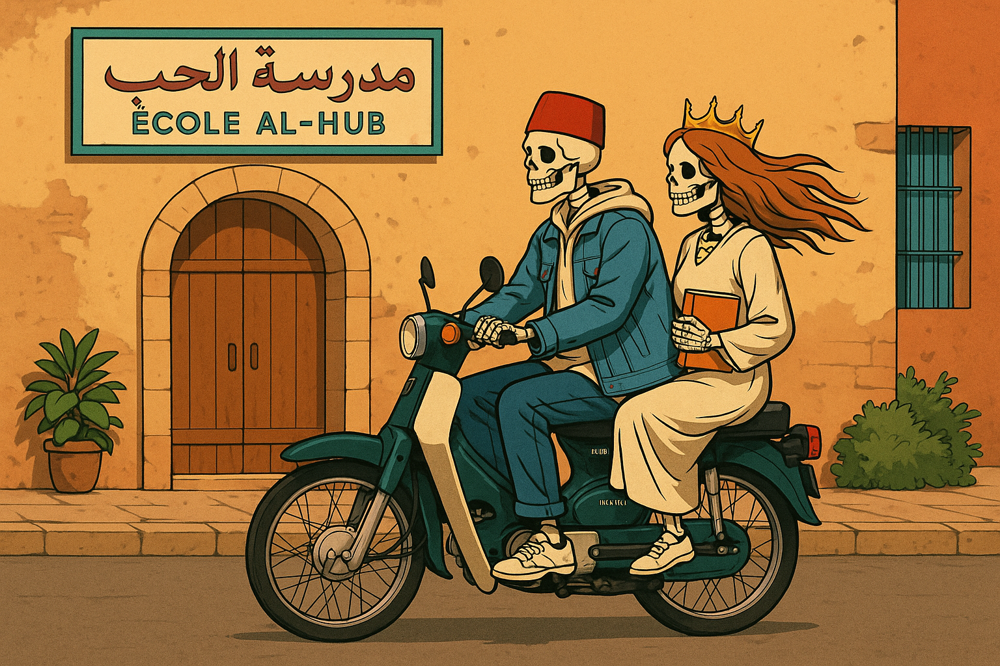
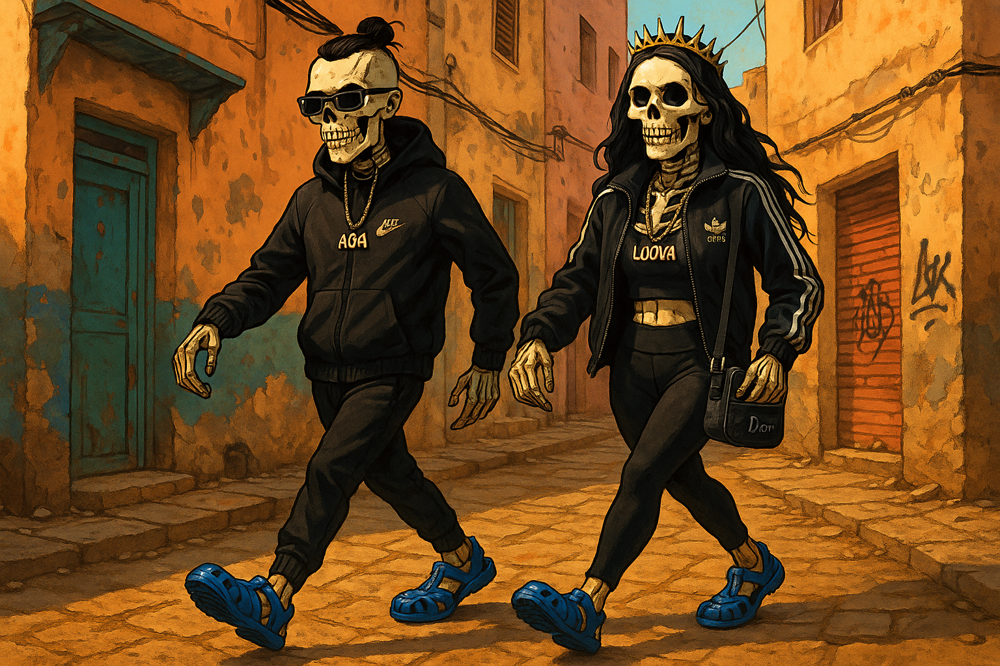

MOROCCO — CHAABI
MADE FOR
THE PEOPLE.
Rhythm. Celebration. Life.
The soul of everyday Morocco.

SIMPLE.
LOUD.
ALIVE.
Music made for everyone.
A rhythm shared across generations.


LIFE
HAPPENS
OUTSIDE.
Streets. Markets. Neighbours.
The little moments that feel like home.


NO STAGE.
NO FILTER.
JUST LIFE.
The beauty is in the ordinary.
The stories live in the streets.



CHAABI — MOROCCO